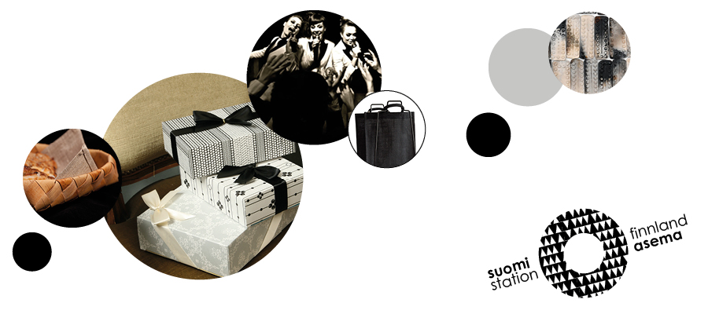

<div lk-carousel id="works" class="carousel slide" data-ride="carousel">
    <!-- Indicators -->
    <ol class="carousel-indicators">
        <li data-target="#carousel-example-generic" data-slide-to="0" class="active"></li>
        <li data-target="#carousel-example-generic" data-slide-to="1"></li>
        <li data-target="#carousel-example-generic" data-slide-to="2"></li>
    </ol>

    <!-- Wrapper for slides -->
    <div class="carousel-inner">
        <div class="item active">
            
            <div class="carousel-caption">
                <h3>Suomi-asema</h3>
                <p>Frankfurt 2014</p>
            </div>
        </div>
        <div class="item">
            
            <div class="carousel-caption">
                <h3>Yeoman</h3>
                <p>Just a dweeb</p>
            </div>
        </div>
        <!-- ... -->
    </div>

    <!-- Controls -->
    <span class="left carousel-control" href="#works" data-slide="prev">
        <span class="glyphicon glyphicon-chevron-left"></span>
    </span>
    <span class="right carousel-control" href="#works" data-slide="next">
        <span class="glyphicon glyphicon-chevron-right"></span>
    </span>
</div>
